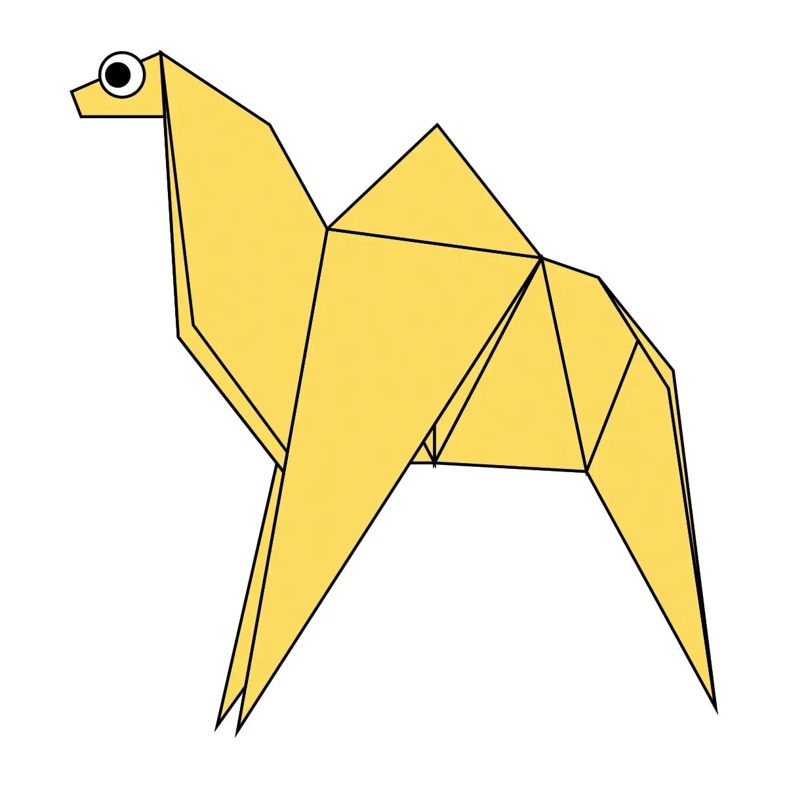
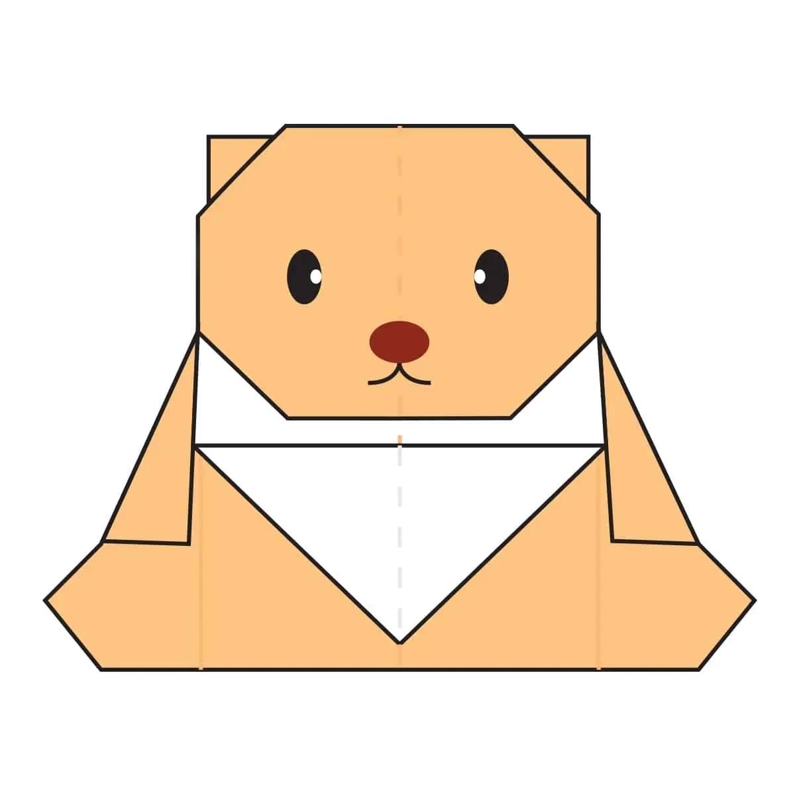
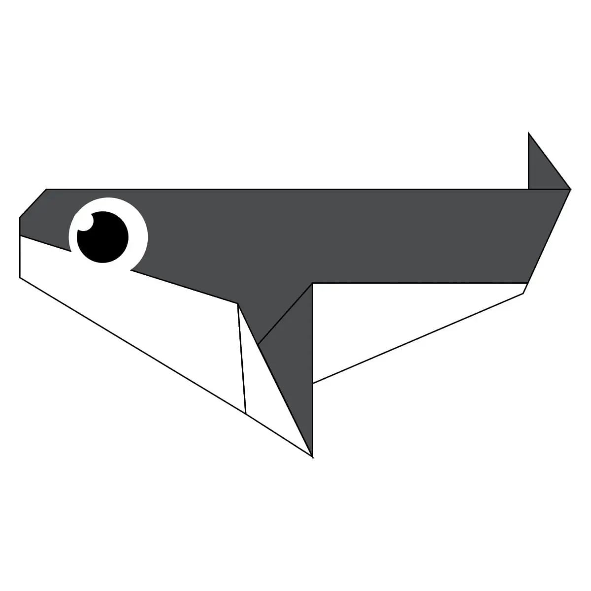

This is camel origami
Intresting Facts about camels!
- Camels are perfectly adapted to live in
deserts. - Camels have broad feet so that they don't sink in sand
- Eyelashes of camels are very thick, as to protect from
sand - They have a hump, which stores fat and acts like food
reserve for them. - There blood can hold significant amount of water
, so they can survive without water for many days. - The legs of camel is long as to keep there body as
far away as the hot sand.

This is chameleon origami
Intresting facts about chameleons!
- The tongue of chameleon is very long; twice as long
as their own body - Chameleon can see in two different direction at same
time. - Chameleon have ability to camoflage themselves in
the surrounding by changing their color. - Almost half the known species of chameleon live in
Madagaskar alone!!! - Unlike other lizards chameleon can't regrow their tales.

This is Pigeon origami
Intresting Facts about pigeons!
- Pigeons are very good in flying, the speed of pigeon
can reach 140 km/h. - Pigeons were also used in world war 1 in sending
messages over battle field - Sense of hear in these animals is also excellent
and hear frequencies lower than humans can. - Pigeons are very social and intelligent animals.

This is Bear origami
Intresting Facts about bear.
- Bears are very intelligent animals, have excellent
navigation skills and big brains. - Bears also use tools for hunting and playing.
- Bears grieve deeply for others. Cubs are known
to moan and cry when separated from
their mothers. - Bears have excellent senses of smell, sight and
hearing. They can smell food, cubs, a mate or predators
from kilometers away. - Some species bears can also make nest on trees
for hiding, eating and sleeping.

This is Orca whale(killer whale)
Intresting Facts about Orca whale.
- Killer whales are not whales!!
- Orcas have no natural predators.
- Orcas have 2nd heaviest brain in marine
animals. - These whales can eats sharks in their diet.
- Unlike other marine animals having sharp sense
of smell; orcas have no sense of smell!! - One female orca even lived 103 years!!